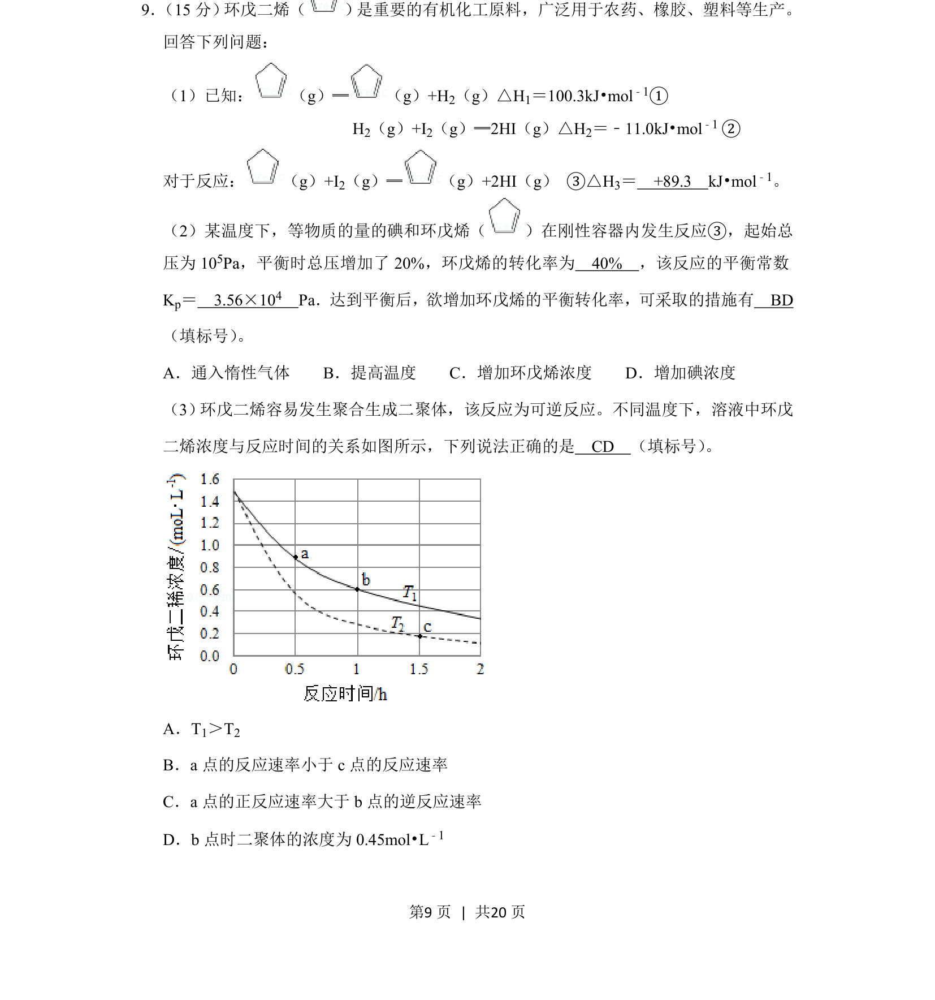
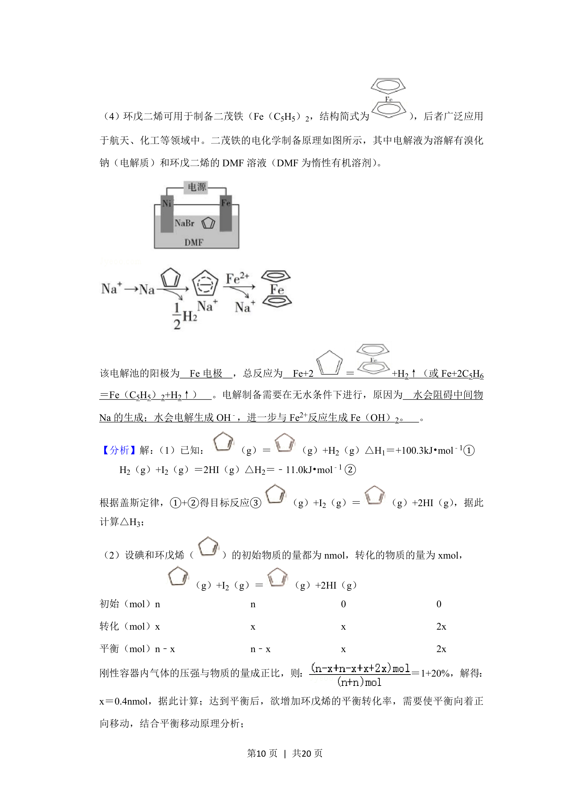
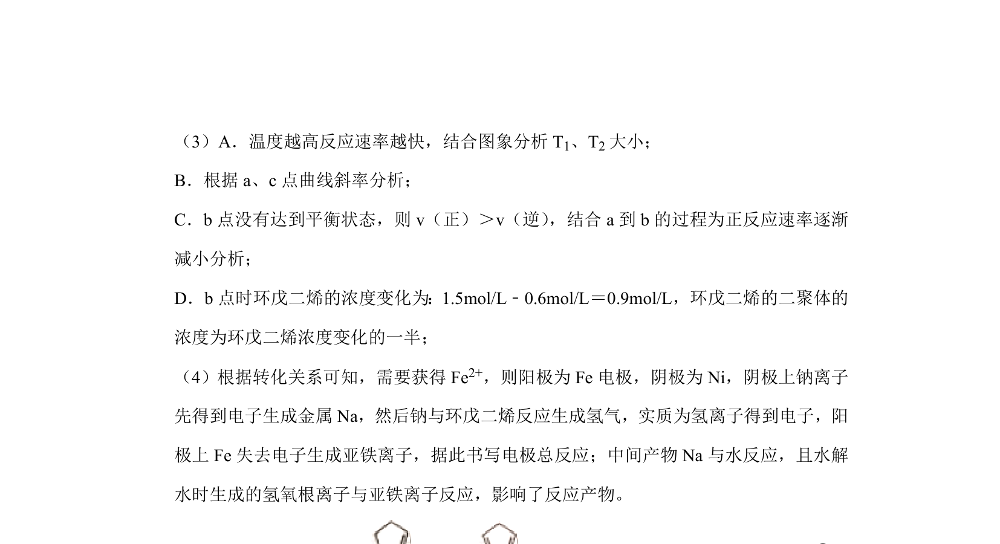
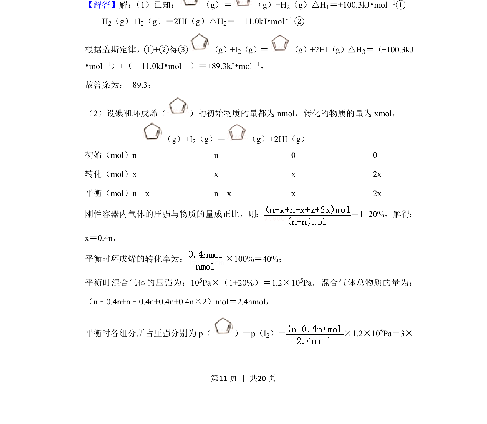
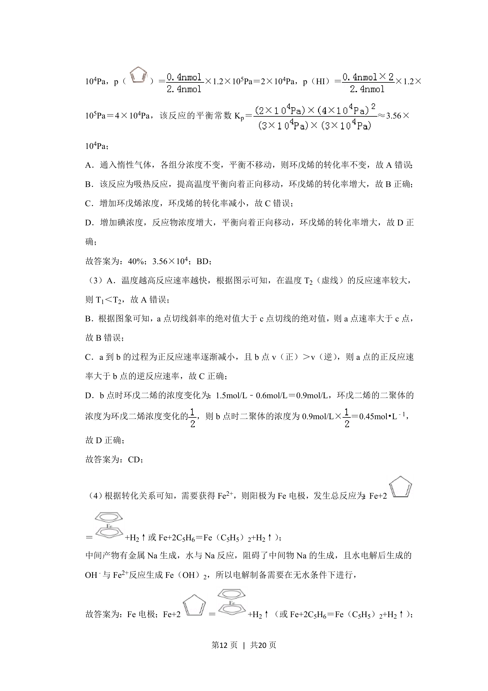
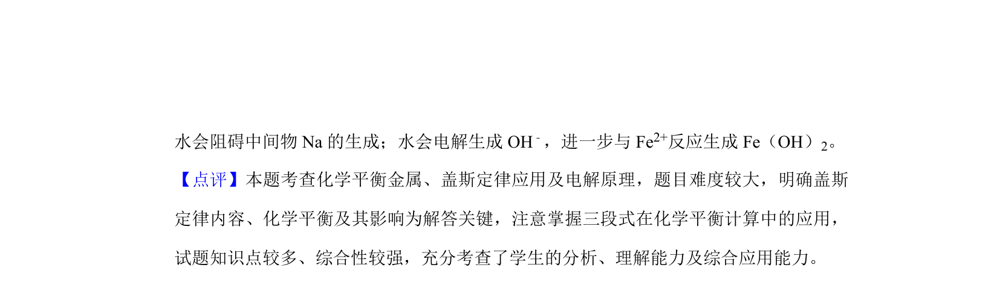

考点：盖斯定律 化学平衡常数 转化率 反应速率图像分析



本题为化学热力学与化学平衡综合题，涉及盖斯定律、转化率与平衡常数计算、反应速率与条件判断。



📄 原 PDF 第 9 页：
素材/真题/吉林/2008-2024·（吉林）化学高考真题/2019年高考化学试卷（新课标Ⅱ）（解析卷）.pdf
9． （15分） 环戊二烯（ ） 是重要的有机化工原料，广泛用于农药、橡胶、塑料等生产。 回答下列问题： （1）已知： （g）═ （g）+H 2（g）△H1＝100.3kJ•mol﹣1① H 2（g）+I2（g）═2HI（g）△H2＝﹣11.0kJ•mol﹣1 ② 对于反应： （g）+I 2（g）═ （g）+2HI（g） ③△H 3＝ +89.3 kJ•mol﹣1。 （2）某温度下，等物质的量的碘和环戊烯（ ）在刚性容器内发生反应③，起始总 压为10 5Pa，平衡时总压增加了20%，环戊烯的转化率为 40% ，该反应的平衡常数 Kp＝ 3.56×104 Pa．达到平衡后，欲增加环戊烯的平衡转化率，可采取的措施有 BD （填标号） 。 A．通入惰性气体 B．提高温度 C．增加环戊烯浓度 D．增加碘浓度 （3） 环戊二烯容易发生聚合生成二聚体，该反应为可逆反应。不同温度下，溶液中环戊 二烯浓度与反应时间的关系如图所示，下列说法正确的是 CD （填标号） 。 A．T1＞T2 B．a点的反应速率小于c点的反应速率 C．a点的正反应速率大于b点的逆反应速率 D．b点时二聚体的浓度为0.45mol•L ﹣1